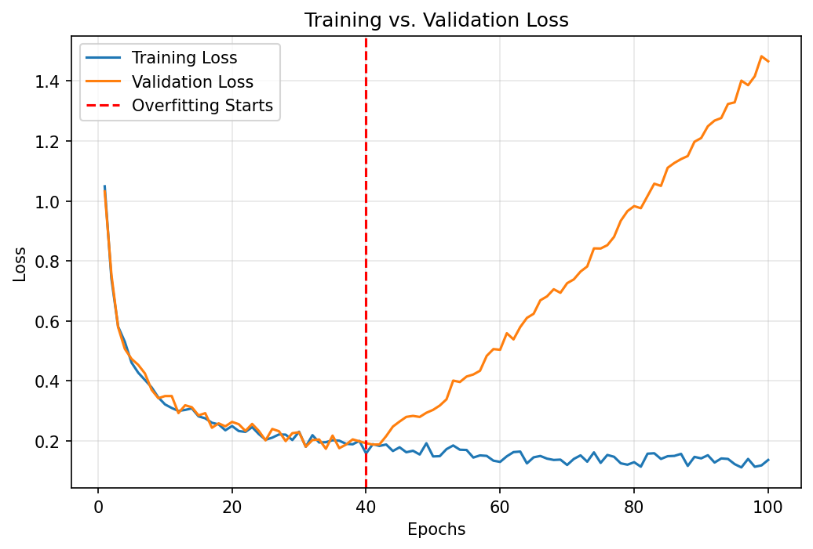
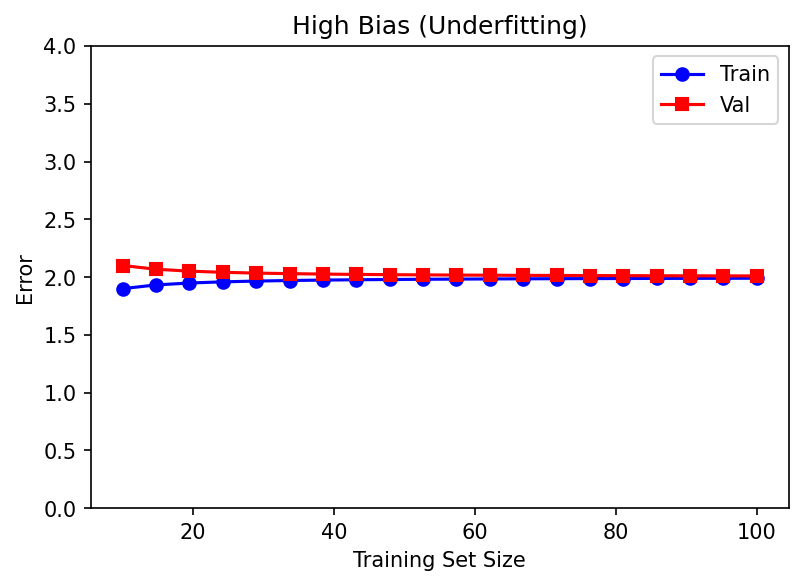
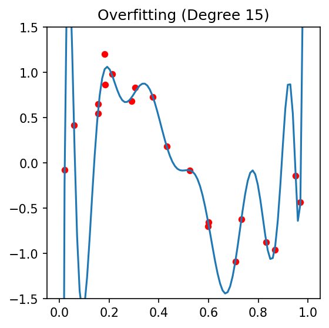
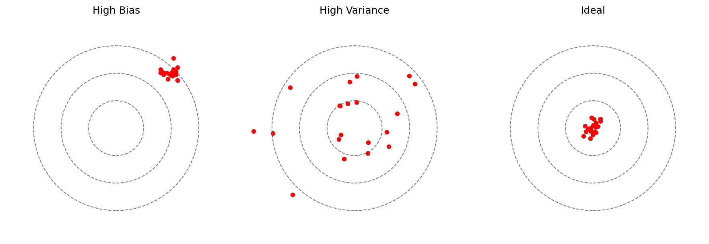
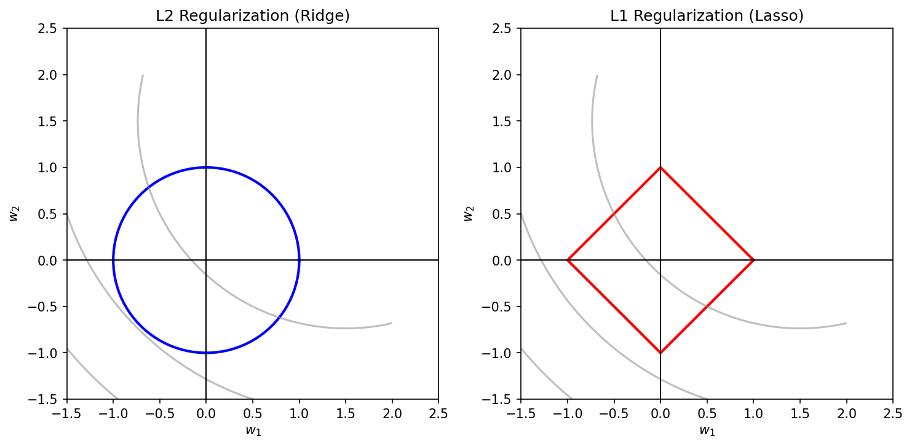
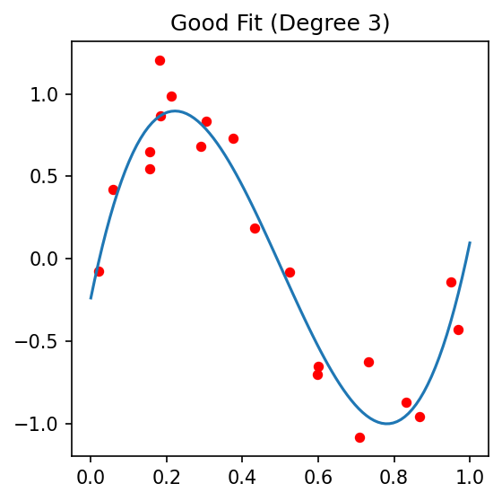
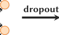
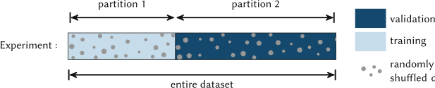

Machine Learning in Materials Processing & Characterization
Unit 7: Generalization, Robustness, and Process Windows
FAU Erlangen-Nürnberg


01. Where We Are
Recap — Units 1–6 (ML-PC) and MFML W1–W6
- Unit 2: the measurement chain \(\xi(t) \rightarrow x_i\) + noise model.
- Unit 3: cleaning, scaling, leakage, error metrics.
- Units 4–6: representations, CNNs, transfer learning under data scarcity.
- MFML W6 (parallel track): loss landscapes, gradient descent, neural-network training.
Today — Unit 7 (delivered Week 7)
You have a model that trains. The hard questions begin now:
- Will it work on next week’s sample?
- Will it work on the other microscope?
- Where in process space can we trust its decisions enough to ship parts?
02. Learning Outcomes
By the end of this lecture you can:
- Decompose prediction error into bias, variance, and irreducible noise, and read this decomposition off a learning curve.
- Choose a regularizer (\(L_1\), \(L_2\), dropout, early stopping, augmentation) and justify it as a Bayesian prior.
- Design a leakage-free validation protocol (k-fold, stratified, group, time-aware) for a materials dataset.
- Tune hyperparameters with grid / random / Bayesian search and explain when each is appropriate.
- Assess robustness to measurement noise, distribution shift, and outliers — and distinguish the three.
- Define an ML-driven process window with a quantified safety margin, given a calibrated classifier or regressor.
- Quantify which inputs drive a model’s prediction (permutation importance, saliency, SHAP teaser).
03. Today’s Map
Six sections, ≈90 min
- §1 Generalization & bias–variance (≈15 min)
- §2 Robustness & noise (≈14 min)
- §3 Cross-validation & HPO (≈18 min)
- §4 Process windows (≈15 min)
- §5 Sensitivity & feature importance (≈12 min)
- §6 Wrap-up & forward links (≈6 min)
Two checkpoints, one demo
- Think-pair-share after §2: “Is this an outlier or a discovery?”
- Live demo in §3: 5-fold CV on a tiny tensile-strength dataset.
- Think-pair-share after §4: “Where is the keyhole boundary, and how confident are you?”
§1 · Generalization & Bias–Variance
04. Generalization is the Goal
The model’s job is not to fit the training data.
- We do not care about \(L_{\text{train}}\).
- We care about \(L_{\text{test}}\) on data the model has never seen.
- Generalization = transferring learned structure to new samples drawn from the same (ideally) distribution.
Formally Bishop, Christopher M., (2006):
\[ L_{\text{gen}}(\hat f) \;=\; \mathbb{E}_{(x,y)\sim p_{\text{data}}} \!\left[ \ell\bigl(y, \hat f(x)\bigr)\right] \]
We can never compute this — we only ever estimate it from a held-out sample. Today is largely about building those estimators correctly.
05. Training vs. Testing Error
- Training error measures fitting — how well the parameters minimize \(L\) on the data they were optimized against.
- Testing error measures generalization — how well the model performs on data the optimizer never touched.
- The gap \(L_{\text{test}} - L_{\text{train}}\) is the generalization gap.
Engineering reading Sandfeld, Stefan et al., (2024):
- Both errors decreasing → underfitting; add capacity.
- Train error \(\downarrow\), test error \(\uparrow\) → overfitting; regularize, get more data, or simplify.
- Both errors plateau at the same high value → noise floor / data is not informative.

06. Underfitting — High Bias
A model with insufficient capacity to capture the underlying structure.
- Linear fit to a quadratic relationship.
- Constant predictor for a structured field.
- Both train and test error are high and similar.
Symptoms on the curve: both losses plateau early at a high value; the gap is small.
Materials examples:
- Predicting yield strength from composition alone, ignoring grain size.
- Linear regression on a nonlinear \(\sigma\)–\(\dot\varepsilon\)–\(T\) surface.
- Tiny CNN (\(<10^4\) params) on 4D-STEM patterns.


07. Overfitting — High Variance
A model with excess capacity that memorizes training noise.
- 10th-degree polynomial through 5 points.
- Decision tree grown to leaf-purity on every sample.
- Deep CNN with millions of parameters on a few hundred images (Unit 6).
Symptoms: train loss tiny, validation loss large; big gap.
Materials-specific causes:
- Tiny \(N\): hundreds of micrographs, millions of weights.
- Group structure: 1000 patches from 5 specimens looks like 1000 samples but behaves like 5.
- Instrument fingerprints: the model learns “this is microscope A’s vignetting,” not the physics.


08. The Bias–Variance Decomposition
For squared-error regression with target \(y = f(x) + \varepsilon\), \(\mathbb{E}[\varepsilon]=0\), \(\mathrm{Var}(\varepsilon)=\sigma^2\) Bishop, Christopher M., (2006); Murphy, Kevin P., (2012):
\[ \mathbb{E}\bigl[(y - \hat f(x))^2\bigr] = \underbrace{\bigl(\mathbb{E}[\hat f(x)] - f(x)\bigr)^2}_{\text{Bias}^2} + \underbrace{\mathrm{Var}(\hat f(x))}_{\text{Variance}} + \underbrace{\sigma^2}_{\text{Irreducible}} \]
- Bias² ↓ as model complexity ↑.
- Variance ↑ as model complexity ↑.
- Irreducible (\(\sigma^2\)) is fixed by the physics of the measurement (Unit 2).

09. Reading the U-Curve

The classical “model selection” picture:
- Move right (more capacity) → bias falls, variance rises.
- The total-error curve has a minimum: this is the sweet spot \(\mathcal{M}^\star\).
- Capacity = parameter count, polynomial degree, tree depth, kernel bandwidth, NN width × depth.
Modern caveat (deep nets). In overparameterized networks the U-curve becomes a double descent: error rises near the interpolation threshold, then falls again deep into the overparameterized regime. We name it; we do not derive it. Pragmatically: regularize and CV either way.
10. Why Materials ML Overfits So Easily
Three structural reasons Sandfeld, Stefan et al., (2024):
- Small \(N\): experiments are expensive; we routinely train on \(10^2–10^3\) samples.
- High \(D\): a \(1024^2\) micrograph is \(10^6\)-dimensional; a 4D-STEM dataset can be \(10^{10}\)-dimensional Pelz, Philipp M. et al., (2023), doi:10.1038/s41467-023-43634-z.
- Group structure: many “samples” are slices of the same specimen — they are not independent.
Two cultural reasons:
- We borrow architectures from ImageNet (millions of params, designed for \(10^7\) images) and apply them to 200 SEM images.
- We forget that augmentation, transfer learning, and physics priors are the only realistic counterweights.
Lesson from Unit 6. When data is scarce, simpler is almost always better unless you can pretrain on a related domain.
11. Regularization — Keeping it Simple
Add a penalty on complexity to the training loss:
\[ \mathcal{L}_{\text{reg}}(\theta) \;=\; \mathcal{L}_{\text{data}}(\theta) \;+\; \lambda \cdot \Omega(\theta) \]
| \(\Omega(\theta)\) | Bayesian prior | Effect |
|---|---|---|
| \(\|\theta\|_2^2\) | Gaussian | shrinks all weights toward 0 |
| \(\|\theta\|_1\) | Laplace | sparsity — sets weights to 0 |
| \(\|\nabla \theta\|^2\) | smoothness | spatially smooth fields |
Other regularizers Goodfellow, Ian et al., (2016):
- Dropout (NN), early stopping, data augmentation (Unit 6), batch norm, weight averaging.
- All trade a little bias for a lot of variance.

12. Regularization in Pictures

The same data, three values of \(\lambda\). Tuning \(\lambda\) is the most common single hyperparameter problem in applied ML.
§2 · Robustness & Noise
13. Defining Robustness
Generalization = same distribution, new sample. Robustness = perturbed distribution.
A model is robust if its prediction \(\hat f(x)\) changes only modestly when:
- the input \(x\) is corrupted by noise,
- the input distribution shifts (new instrument, new operator, new batch),
- a small fraction of training data is contaminated.
Two flavors of uncertainty (Unit 2 recap) Neuer, Michael et al., (2024):
- Aleatory — irreducible randomness in the measurement (Poisson shot noise, thermal jitter).
- Epistemic — gaps in the model’s knowledge (regions of input space we never sampled).
A robust model is aleatory-tolerant and epistemic-honest.
14. Aleatory Uncertainty — Measurement Noise
The detector noise we cannot remove (Unit 2):
- Photon-counting / electron-counting → Poisson.
- Read noise, dark current → Gaussian.
- Quantization → uniform.
Robust ML requirement: prediction insensitive to noise within the measurement’s natural fluctuation envelope.
Diagnostic test.
- Take a real input \(x\).
- Sample \(n\) noise realizations \(\eta^{(k)} \sim p_{\text{noise}}\) consistent with the detector physics.
- Compute the prediction spread \(\{\hat f(x + \eta^{(k)})\}_{k=1}^n\).
- A robust model’s spread should be \(\ll\) the variation across genuinely different inputs.
15. Epistemic Uncertainty — Saying “I don’t know”
The model has not seen this region of input space.
- A grain-size predictor trained on Inconel 718 asked about pure Cu.
- A defect classifier trained at 10 kV asked about a 30 kV image.
- A process-window predictor asked about parameters outside the training cube.
A robust model abstains rather than extrapolates with false confidence.
How to detect it (preview of Unit 12):
- Ensembles: train \(M\) models, look at prediction variance.
- Bayesian NNs / MC Dropout: posterior predictive variance.
- Gaussian Processes: native posterior variance — the “gold standard.”
- Conformal prediction: distribution-free coverage guarantees.
If \(\mathrm{Var}(\hat f(x))\) is high, refuse to act.
16. Distribution Shift
Train and test data are no longer drawn from the same distribution.
- Covariate shift: \(p_{\text{train}}(x) \neq p_{\text{test}}(x)\) but \(p(y\mid x)\) unchanged.
- Label / concept shift: \(p(y\mid x)\) itself changes (e.g., a new failure mode appears).
- Prior shift: class proportions change (defects 1% → 10%).
Materials examples:
- TEM images from microscope A (FEI Titan) → microscope B (JEOL ARM): different aberrations, detector PSF, vignetting Sanchez-Santolino, Gabriel et al., (2025).
- AM build plates from machine 1 → machine 2: different thermal history, slightly different powder.
- A new operator changes the sample-prep recipe.
Detection: prediction distribution looks different on test, or input statistics drift (KS-test, MMD, energy distance).
17. Outliers — The Robustness Stress Test
Single bad data points can derail a non-robust loss.
| Loss | Sensitivity | Comment |
|---|---|---|
| MSE / OLS | \(\propto r^2\) | one large \(r\) dominates |
| MAE | \(\propto |r|\) | robust |
| Huber | quadratic small \(r\), linear large \(r\) | best of both |
| Tukey biweight | bounded influence | redescending |
Try it on the chalkboard. Add one \(r = 100\) outlier to a 10-point regression. The MSE-fit line moves visibly; the MAE fit barely twitches.
For classification: the analogous knob is the loss margin (hinge vs cross-entropy vs focal loss). Imbalanced datasets (rare defects, rare phases) further amplify outlier effects Sandfeld, Stefan et al., (2024).
18. Outlier or Discovery? — Think–Pair–Share
The scientific caveat.
- An “outlier” can be a measurement error to delete.
- Or a rare physical event to write a Nature paper about.
- Removing it is a methodological choice, not a janitorial one.
Discuss with your neighbor (2 min):
- A grain-boundary segregation map shows one specimen with 10× the typical Ni content. Outlier or discovery?
- A tensile test shows one sample at 3× normal yield. Outlier or discovery?
- An XRD peak appears in 1 of 500 measurements at an unexpected \(2\theta\). Outlier or discovery?
Test of intent: does the mechanism generating the rare point fit our physical model?
19. Adversarial Examples in Materials?
Adversarial example: an imperceptibly small input perturbation that flips the prediction.
\[ x' = x + \delta,\quad \|\delta\| < \epsilon,\quad \hat f(x') \neq \hat f(x) \]
- A core security concern in computer vision and NLP.
- Less studied for materials data — but real, particularly for automated QC.
When does it matter for ML-PC?
- Automated quality control: a CNN approves/rejects parts. A vendor with a bad incentive could perturb surface texture to spoof “pass.”
- Physical realism: even non-adversarial small perturbations matter — a 1 °C change in build temperature should not flip a “pass” classifier (slide 21).
20. Making CNNs Robust — Augmentation Recap
From Unit 6: augmentation = teaching invariances explicitly.
- Random flips, rotations, crops → rotational/translational invariance.
- Brightness/contrast jitter → exposure invariance.
- Gaussian / Poisson noise injection → noise invariance bishop1995training?.
- MixUp / CutMix → mixed-sample interpolation invariance.
For materials specifically:
- Add realistic detector noise models, not generic Gaussian.
- Augment with instrument transfer functions — different PSFs simulate microscope swaps.
- Use physics-consistent augmentations only: a flipped diffraction pattern violates centrosymmetry of the lattice — a flipped grain map does not.

21. Physical Continuity as a Robustness Requirement
Engineering smell test.
If I change the temperature by 1 °C, the predicted yield strength should not jump by 100 MPa.
- Physical fields are usually smooth in their inputs.
- A discontinuous ML predictor is almost certainly capturing noise, not physics.
Operationalize:
\[ \bigl|\hat f(x + \Delta x) - \hat f(x)\bigr| \;\le\; L \cdot \|\Delta x\| \]
— Lipschitz continuity with constant \(L\) matched to physical knowledge.
How to enforce / encourage:
- Spectral normalization on NN weights → bounded Lipschitz.
- Smoothness regularizer \(\lambda \|\nabla_x \hat f\|^2\).
- Physics-informed losses (Unit 13).
- Gaussian processes with smooth kernels (Unit 12).
§3 · Cross-Validation & Hyperparameter Tuning
22. Cross-Validation — Getting More Out of Few Samples
The single hold-out problem. With \(N \approx 100\) samples, an 80/20 split tests on 20 — way too noisy, very dependent on which 20.
\(k\)-fold CV Sandfeld, Stefan et al., (2024):
- Partition the data into \(k\) disjoint folds.
- For \(i = 1, \dots, k\): train on the other \(k-1\) folds, test on fold \(i\).
- Report mean and std of the \(k\) test scores.
- \(k = 5\) or \(k = 10\): standard.
- \(k = N\): leave-one-out (LOOCV) — small bias, high variance, expensive.
- Each sample is in the test set exactly once.

23. Stratified \(k\)-Fold
Problem. In an imbalanced dataset (e.g., 95% “good” parts, 5% “defect”), random folds may end up with zero defects in a test fold.
Stratified \(k\)-fold: preserve class proportions in each fold.
- Each fold has the same fraction of each class as the original dataset.
- Mandatory for classification, especially with rare classes.
Materials examples:
- Rare defect detection (porosity, cracks).
- Phase classification with one minority phase.
- Multi-phase quantification: stratify on the dominant phase or use multilabel stratification.
Regression analog. Bin the target \(y\) into quantiles, then stratify on the bin. Keeps fold means comparable. Critical when \(y\) has heavy tails (most materials properties do).
24. Group Splits — The Materials Killer
Never put images from the same specimen in both train and test folds.
- 5 specimens × 200 patches each → \(N_{\text{indep}} \approx 5\), not 1000.
- Random k-fold reports inflated accuracy (the model recognizes the specimen, not the property).
- This is leakage in disguise — the most common materials-ML error.
Group-aware k-fold: partition by group ID (specimen, batch, session, instrument), not by row.
GroupKFoldin scikit-learn.- For nested groups (specimen ⊂ batch), use the outermost group.
Time-aware variant for sequential data: train on past, test on future (“walk-forward CV”).
- Mandatory for in-situ process data (Unit 7) — random splits peek into the future.
- Use
TimeSeriesSplitwith an expanding window.
25. Parameters vs. Hyperparameters
Parameters \(\theta\) — learned by the algorithm:
- NN weights and biases.
- Linear regression coefficients.
- Tree split thresholds.
- Optimized to minimize a loss on training data via gradient descent or analytic solution.
Hyperparameters \(\eta\) — chosen by the human (or HPO algorithm):
- Learning rate, batch size, # epochs.
layers, # filters, # neurons, dropout rate.
- \(\lambda\) in regularization.
- Tree depth, # trees.
- Kernel bandwidth, \(C\) in SVM.
Cardinal rule: never tune hyperparameters on the test set.
26. Hyperparameter Tuning is the Outer Loop
Two nested optimization problems:
- Inner: find best parameters \(\theta^\star(\eta)\) given hyperparameters \(\eta\).
- Outer: find best hyperparameters \(\eta^\star = \arg\min_\eta L_{\text{val}}(\theta^\star(\eta))\).
The outer loop is expensive: each evaluation requires a full training run.
Three classes of outer-loop methods:
- Grid search — exhaustive on a regular lattice. Brute force.
- Random search — i.i.d. samples from the hyperparameter prior.
- Bayesian optimization — model the loss surface, query smartly.
Modern variants: Hyperband, BOHB, population-based training.
27. Grid Search — The Brute Force Baseline
Try every combination on a regular lattice.
- 2 hyperparameters × 5 levels each = 25 evaluations.
- 5 hyperparameters × 5 levels each = 3125 evaluations.
The curse of dimensionality bites: cost scales as \(L^d\) for \(d\) hyperparameters, \(L\) levels per dim.
- Tractable for \(d \le 2\).
- Unaffordable beyond \(d \approx 4\).
When grid search is fine:
- 1–2 well-known hyperparameters.
- Small training cost per run.
- You want a replicable, paper-friendly sweep.
When grid search is wrong: any time you have \(\ge 3\) hyperparameters of unknown sensitivity. Use random search.
28. Random Search — Better Than Grid
Sample hyperparameters i.i.d. from a prior.
- Same budget; different sampling pattern.
- bergstra2012random?: for the same budget, random search consistently equals or beats grid search.
Intuition. Most hyperparameters do not matter. Random search marginalizes over the unimportant ones; grid search wastes budget on them.
Practical recipe:
- Log-uniform priors for \(\lambda\), learning rate.
- Discrete-uniform for integer counts.
- 50–200 random samples is usually enough to find a good neighborhood.
The 2-D intuition.
If only 1 of 2 hyperparameters matters, grid search at 5 levels samples that 1 hyperparameter at 5 distinct values; random search at 25 trials samples it at ~25 distinct values. 5× more resolution on the important axis, for free.
29. Bayesian Optimization — Smart Search
Build a surrogate model of \(L_{\text{val}}(\eta)\), query where it expects to improve most.
- Surrogate: usually a Gaussian Process (Unit 12 preview!).
- Acquisition function: Expected Improvement, Upper Confidence Bound, Thompson sampling.
- Each evaluation updates the surrogate; the next query is chosen to balance exploration (high uncertainty) and exploitation (low predicted loss).
When to use BO:
- Each evaluation is expensive (training takes hours).
- Budget is small (\(\sim 20\)–\(200\) evaluations).
- Hyperparameter space is moderate-dim (\(d \le 20\)) and mostly continuous.
Tools: Optuna, Hyperopt, BoTorch, scikit-optimize, Ax.
30. AutoML and Beyond
AutoML: automate the entire pipeline — preprocessing, feature engineering, model class selection, hyperparameter search, ensembling.
- Tools:
auto-sklearn,TPOT,H2O AutoML,AutoGluon. - Often beat hand-tuned baselines on tabular data.
Architecture search (NAS): search over NN architectures themselves.
- Computationally heavy; rarely worth it for materials-sized datasets.
- DARTS, ENAS — name-only.
Caveats for materials.
- AutoML cannot invent physics-aware architectures (PINNs, equivariant nets, ptychographic priors).
- AutoML does not enforce group-aware CV by default — supply your own splitter.
- AutoML can cheerfully overfit your tiny dataset by trying 1000 models.
31. The Three Sets — Drawn Once, Used Once
Discipline:
- Train — fits parameters \(\theta\).
- Validation — tunes hyperparameters \(\eta\), model class, when to stop.
- Test — frozen at the start; reported exactly once in the paper.
For small \(N\): nested cross-validation.
- Outer loop (k folds): each outer fold is a fresh test set.
- Inner loop (k′ folds within the training portion): hyperparameter tuning.
- Compute, but it is the only honest protocol when \(N < 1000\).
Forbidden moves.
- Re-running the test set after seeing the score.
- Choosing the seed that gives the best test number.
- “Just one more architecture” after the test was reported.
These are test-set leakage. The number you report is no longer an estimate of generalization.
§4 · Process Windows
32. What is a Process Window?
The region in process-parameter space where the product meets specifications.
- Process parameters: laser power \(P\), scan velocity \(v\), layer thickness \(t\), build temperature \(T\), …
- Specifications: porosity \(<\) 0.1%, yield strength \(>\) 800 MPa, no cracks, …
A process window is the intersection of all “good enough” regions.
Why ML? Each specification corresponds to a model that maps process → property. Combining them gives a window. ML fills the parameter space without running every experiment.
Engineering deliverable. A process window is the output the production team actually wants. Not a test accuracy. Not an \(R^2\). A map: “which \((P, v, T)\) values are safe?”
33. The Traditional Process Map
Pre-ML construction:
- Run a designed experiment (DoE) over \((P, v)\) at a coarse grid.
- Section the parts; measure porosity, defects.
- Hand-draw “good” and “bad” regions on the \((P, v)\) plane.
Limitations:
- Coarse grid → boundaries are interpolated by eye.
- No uncertainty estimate on the boundary.
- Each new alloy / machine / powder requires a fresh DoE.

34. ML-Driven Process Windows
Train a classifier or regressor on (process, outcome) pairs:
- Classifier: \((P, v, T) \mapsto\) {pass, fail}.
- Regressor: \((P, v, T) \mapsto\) porosity, yield strength, …
- Predict over the entire parameter space, not just where you have measurements.
The boundary = the set where the classifier output transitions from “pass” to “fail” — typically the \(p = 0.5\) contour.
What this gives you that DoE alone does not:
- Continuous prediction across parameter space.
- Multi-property combination (intersect several models).
- Uncertainty quantification on the boundary (next slide).
- Active learning loop: query where the model is most uncertain.
35. Probabilistic Windows — Add Uncertainty Bars
A sharp boundary lies. Use probability contours.
- Output of the classifier is \(p(\text{pass}\mid \eta) \in [0, 1]\).
- Draw the 95% safe contour: \(\{\eta : p \ge 0.95\}\).
- Draw the uncertain band: \(\{\eta : 0.05 < p < 0.95\}\).
Operational use:
- Inside the 95% contour: qualified operating region.
- In the uncertain band: do more experiments before shipping.
- Outside: do not operate.

36. Case Study — Additive Manufacturing \((P, v)\)
The canonical AM process map. Laser-powder-bed fusion (L-PBF):
- \(P\): laser power, 100–400 W.
- \(v\): scan velocity, 0.5–3 m/s.
- Energy density \(E = P / (v \cdot t \cdot h)\) — a useful but incomplete derived feature.
Three regimes (drawn on the chalkboard):
- Low \(E\) — lack of fusion: incomplete melting, porosity, weak parts.
- Intermediate \(E\) — conduction mode: dense, sound parts. The window.
- High \(E\) — keyholing: vapor cavity, instability, deep porosity.
37. Multi-Property Process Windows
Real specifications combine multiple properties:
\[ \Omega = \bigcap_{i=1}^{m} \{\eta : f_i(\eta) \in [a_i, b_i]\} \]
- \(f_1\): porosity ≤ 0.1%
- \(f_2\): yield strength ≥ 800 MPa
- \(f_3\): elongation ≥ 5%
- \(f_4\): cost per part ≤ €50
Each \(f_i\) is a separate learned model with its own uncertainty. The intersection’s confidence is the worst component’s confidence at every point.
Trade-off frontier. When the intersection is empty: optimize Pareto-front — find the set of \(\eta\) values that are non-dominated.
This is multi-objective optimization; classical tools: NSGA-II, Bayesian-multi-objective with hypervolume.
38. Visualizing High-Dimensional Windows
Real processes have \(d \gg 2\) parameters. You cannot draw a \(d\)-D window. Strategies:
- 2-D slices at fixed values of the other \(d - 2\) parameters.
- Pair-plots — all \(\binom{d}{2}\) slices.
- PCA projection of the qualifying region — shows the shape of \(\Omega\) in 2-D.
- t-SNE / UMAP of qualifying points — non-linear embedding (Unit 2 recap).
- Interactive dashboards (Plotly, ParaView) for engineers to explore.
Caveat. A 2-D slice through a 5-D window can look like a closed contour but be misleading: nearby slices can be empty. Always supplement with marginal probabilities \(p(\Omega \mid \eta_j)\) for each parameter \(j\).
39. Real-Time Window Monitoring
The closed loop.
- Run the process; collect in-situ sensor data (Unit 7: thermography, acoustic, photodiode).
- Predict the current operating point in \(\eta\)-space.
- Predict the property model output and the distance to the window boundary.
- If approaching the boundary → alert / adjust.
Distance-to-boundary ≈ \(\frac{p(\eta) - 0.5}{\|\nabla_\eta p(\eta)\|}\) — local linearization.
Examples Neuer, Michael et al., (2024):
- L-PBF: increase laser power if melt-pool temperature drops.
- Casting: adjust pouring rate if mold temperature deviates.
- CVD: adjust flow rates if optical-emission spectroscopy spectra shift.
This is autonomous process control — Unit 11 picks it up.
40. Process Window Design — Think–Pair–Share
The keyhole boundary, with your neighbor (3 min):
You have an L-PBF dataset of \((P, v)\) pairs and porosity measurements. You train two models:
- Model A: random forest, 5-fold CV \(R^2 = 0.92\).
- Model B: GP regressor, 5-fold CV \(R^2 = 0.87\), with calibrated uncertainty.
You must deliver a process window for production. Which do you ship?
Hints to consider:
- \(R^2\) is a point metric; the window cares about boundaries.
- Random forests are piecewise-constant — boundaries are jagged.
- GP gives uncertainty bars on the boundary itself.
- Production needs a qualified envelope, not the maximum possible accuracy.
One reasonable answer: Ship Model B. Use Model A as a sanity-check baseline. The 5-point \(R^2\) gap is dwarfed by the value of calibrated uncertainty.
§5 · Sensitivity & Feature Importance
41. What Drives the Model?
Sensitivity analysis quantifies how much the output changes when an input changes.
- Local: at a specific point \(x_0\), what is \(\partial \hat f / \partial x_j\)?
- Global: across the whole input distribution, how much does varying \(x_j\) change the output?
Two questions, not one:
- Quantitative: how big is the change?
- Qualitative: which inputs the model is actually using — vs which it should be using.
Why this is a robustness diagnostic.
- High sensitivity to a physical parameter → good (model captures physics).
- High sensitivity to a nuisance parameter (scale bar, microscope ID) → bad (model is shortcutting).
- Zero sensitivity to a parameter the engineer says matters → model is missing information.
42. Local Sensitivity — Gradients
At a query point \(x_0\), perturb each input by \(\Delta x_j\):
\[ S_j(x_0) \approx \frac{\partial \hat f}{\partial x_j}\bigg|_{x_0} \;\approx\; \frac{\hat f(x_0 + \Delta x_j) - \hat f(x_0)}{\Delta x_j} \]
- For NNs: free via backprop (“input × gradient” in saliency literature).
- For tree-ensembles: finite differences.
Limitations:
- Local: tells you about \(x_0\), not the global behavior.
- Sign-sensitive: \(|S_j|\) is more useful than \(S_j\) for ranking.
- Misleading at saturated outputs (softmax → 0 gradient even when feature is “important”).
Materials interpretation: \(S_j\) has units. Yield strength (MPa) per unit composition (at%) is a physical sensitivity — compare to thermodynamic models, Hume-Rothery rules, etc.
43. Global Sensitivity — Sobol Indices
How does \(x_j\) matter, on average, across the input distribution?
Variance decomposition (Sobol):
\[ \mathrm{Var}(\hat f) \;=\; \sum_j V_j \;+\; \sum_{j<k} V_{jk} \;+\; \cdots \]
- \(S_j = V_j / \mathrm{Var}(\hat f)\): first-order index — main effect of \(x_j\).
- \(S_j^T\) — total-order index — main + all interactions.
- \(S_j \approx S_j^T\) → no important interactions.
- \(S_j^T \gg S_j\) → strong interactions with others.
Practical use. Rank inputs by \(S_j^T\). Drop or de-prioritize inputs with \(S_j^T \approx 0\).
For materials processes: \(S_j^T\) tells you which control knobs are worth tightening tolerances on.
44. Permutation Importance
Empirical, model-agnostic, easy.
For each feature \(j\):
- Compute test accuracy normally.
- Shuffle feature \(j\) across test rows (breaks association with the target).
- Recompute test accuracy.
- The drop in accuracy = importance of feature \(j\).
Strengths:
- Works for any model — no gradients needed.
- Captures interactions (mostly).
- Has a clear unit: drop in your favorite metric.
Caveats:
- Correlated features: shuffling one when its correlate is intact understates importance.
- Variable across runs — repeat 10–30 times.
- Slow on large datasets (one full evaluation per shuffle).
45. Saliency Maps and Grad-CAM for CNNs
For image inputs, “feature importance” is spatial.
- Saliency: \(\partial \hat f / \partial x\) visualized as a heatmap over the image.
- Grad-CAM: gradient-weighted class activation mapping — coarser but more semantically meaningful.
- Occlusion: slide a gray square across the image; see where prediction collapses.
The Husky-vs-Wolf test (Unit 3 recap).
If the saliency map highlights the scale bar, the watermark, or the corner of the field of view → the model is shortcutting. Catch this before deployment.
Materials examples:
- Grain-size CNN: heatmap should fall on grain boundaries, not on the diagonal vignetting gradient.
- Defect classifier: heatmap should highlight the defect, not the surrounding matrix.
- Phase classifier: heatmap should track the phase boundaries, not the SEM scale bar.
46. SHAP — Game-Theoretic Attribution
Shapley values: fairly distribute the “credit” for a prediction among the input features.
For each feature \(j\) and prediction \(\hat f(x)\):
\[ \phi_j = \sum_{S \subseteq F\setminus\{j\}} \frac{|S|!\,(d-|S|-1)!}{d!} \bigl[\hat f(S\cup\{j\}) - \hat f(S)\bigr] \]
- Sum over all subsets \(S\) of features.
- \(\sum_j \phi_j = \hat f(x) - \mathbb{E}[\hat f]\) — additive.
Why SHAP, not just gradient × input:
- Local accuracy: contributions sum to the prediction.
- Consistency: a more-influential feature gets a larger Shapley value.
- Missingness: features that do not contribute get zero.
Tools: shap library; TreeSHAP for trees is exact and fast.
47. Stability vs. Sensitivity — Both Required
Two complementary criteria:
- Sensitive to physical inputs — captures the right physics.
- Sensitivity to laser power, temperature, composition: should be substantial and match domain knowledge.
- Stable under noise / nuisance — robustness (§2).
- Sensitivity to detector noise, scan repetition, pixel-level perturbations: should be small.
Combined diagnostic:
\[ Q \;=\; \frac{\|\partial \hat f / \partial x_{\text{physical}}\|}{\|\partial \hat f / \partial x_{\text{nuisance}}\|} \]
— physical signal over nuisance noise. Larger is better.
Anti-pattern. A model with low overall sensitivity looks robust but is useless: a constant predictor has zero sensitivity to everything.
The right combination: high signal sensitivity, low nuisance sensitivity.
§6 · Wrap-Up
48. The Generalization → Robustness → Window Pipeline
One coherent story:
- Generalization (§1): the only accuracy that matters is on unseen data. Decompose error into bias / variance / irreducible.
- Robustness (§2): the world will not be the training distribution. Plan for noise, drift, outliers.
- Validation (§3): use group-aware CV; tune hyperparameters with random search or BO; respect the three-set discipline.
- Process windows (§4): the deliverable is a probabilistic operating envelope, not a single accuracy.
- Sensitivity (§5): audit the model — does it use the physics you wanted? Is it stable to noise?
Each layer is a check on the previous one. Skip a layer and your published model fails on next month’s batch.
49. Summary — Top Takeaways
- Generalization is the only accuracy that matters Bishop, Christopher M., (2006).
- Bias-variance decomposition is the conceptual engine of regularization, CV, and HPO.
- Regularization = Bayesian prior; choose one you actually believe (smoothness, sparsity, positivity).
- Group-aware CV prevents the most common materials-ML failure (within-specimen leakage).
- Hyperparameter tuning: random search ≥ grid search; Bayesian optimization for expensive objectives.
- Process windows with calibrated uncertainty are the deliverable — not test accuracy.
- Sensitivity analysis is the audit layer: physical signal up, nuisance noise down.
- Each layer guards the previous. Pipeline integrity, not single-number accuracy, defines a deployable model.
50. Further Reading & References
Textbook foundations:
- Sandfeld et al., Materials Data Science, Ch. 12 (generalization), Ch. 16 (CV/tuning) Sandfeld, Stefan et al., (2024).
- Bishop, Pattern Recognition and ML, Ch. 1, 3, 5 Bishop, Christopher M., (2006).
- Murphy, Machine Learning: A Probabilistic Perspective, Ch. 6, 7 Murphy, Kevin P., (2012).
- Goodfellow et al., Deep Learning, Ch. 5, 7 (regularization) Goodfellow, Ian et al., (2016).
- McClarren, ML for Engineers, Ch. 1 (overview, robustness) McClarren, Ryan G., (2021).
- Neuer, ML for Engineers — supervised-learning evaluation, uncertainty Neuer, Michael et al., (2024).
Selected papers:
- bergstra2012random? — random vs grid search.
- lundberg2017unified? — SHAP unified attribution.
- selvaraju2017gradcam? — Grad-CAM.
- guo2017calibration? — calibration of modern NNs.
- gal2016dropout? — MC dropout as Bayesian approx.
- saltelli2008global?; sobol1993sensitivity?; herman2017salib? — Sobol indices,
SALib.
Related ML-PC units:
- Unit 6 — transfer learning, augmentation.
- Unit 12 — GPs, calibrated uncertainty.
- Unit 13 — physics-informed regularizers.

© Philipp Pelz - Machine Learning in Materials Processing & Characterization